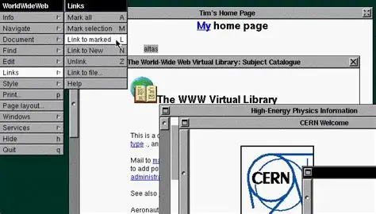

Evolution of Web Browsers
The evolution of web browsers has been a fascinating journey since the inception of the World Wide Web in the 1990s. From the early days of simple text-based browsers to the modern, feature-rich applications we use today, web browsers have undergone significant changes and improvements.
In the Beginning
1990s
1990: Tim Berners-Lee created the first known web browser while working at CERN, a physics laboratory in Geneva. This browser, called WorldWideWeb, was unique because it functioned as both a browser and a web page editor. Created alongside the first web server and HTML language, it laid the foundation for the modern World Wide Web and demonstrated how interconnected documents could be shared across the internet.
1993: Marc Andreessen and Eric Bina developed Mosaic at the National Center for Supercomputing Applications (NCSA). Mosaic was one of the first graphical web browsers, allowing images and text to appear together on a page, making the web much more accessible to non-technical users. Its popularity helped drive public adoption of the internet and inspired future browsers such as Netscape Navigator.1996: Microsoft began bundling Internet Explorer with the Windows operating system, making it the default browser for millions of users worldwide. This strategy dramatically increased Internet Explorer's market share and intensified competition with Netscape Navigator. The resulting competition became known as the "Browser Wars," a period that drove rapid innovation in web technologies.
1997: Mosaic was officially discontinued as newer browsers like Netscape Navigator and Internet Explorer gained popularity and introduced more advanced features. Although its lifespan was relatively short, Mosaic's impact on internet adoption was significant because it proved that graphical web browsing could be practical and user-friendly. Many design concepts introduced by Mosaic influenced future browser development.
2000s
2003: Apple introduced Safari as the default web browser for Mac OS X. Built on the WebKit rendering engine, Safari offered improved performance and tighter integration with Apple's operating system. Its development marked Apple's entry into the browser market and eventually helped establish the browser ecosystem used on modern Apple devices.
2004: Mozilla Firefox emerged from Netscape's open-source project and quickly gained attention as a fast, secure, and customizable browser. Firefox challenged Internet Explorer's dominance by promoting web standards compliance and offering users greater control through extensions and customization options. Its success helped reintroduce competition into the browser market.
2007: Apple launched the first iPhone with Safari Mobile, introducing a browsing experience more comparable to desktop web browsing than previous mobile devices offered. This milestone accelerated the growth of mobile internet usage and encouraged developers to create websites optimized for smaller screens. The rise of smartphones would permanently change how people access the web.
2008: Google released Chrome, a browser designed with speed, simplicity, and security as its primary goals. Chrome introduced a multi-process architecture that improved performance and stability by isolating browser tabs from one another. Its rapid growth and frequent updates helped establish many of the browsing standards and user expectations seen today.
Modern Times
2010s to present
2015: Microsoft introduced Edge as the successor to Internet Explorer, seeking to modernize its web browsing experience and improve support for modern web standards. Edge featured a cleaner interface, improved performance, and stronger security features. The later transition to the Chromium engine further enhanced compatibility with websites and extensions.
2017: Major browsers introduced support for WebAssembly, a technology that allows developers to run high-performance code directly within the browser. By enabling languages such as C, C++, and Rust to execute at near-native speeds, WebAssembly expanded the capabilities of web applications. This advancement made browser-based software such as games, video editors, and design tools more powerful than ever before.
2020: Microsoft rebuilt Edge using Chromium, Google's open-source browser project. This transition improved website compatibility, performance, and support for browser extensions while maintaining Microsoft's own features and security enhancements. The move reflected a broader industry trend toward standardized web technologies and cross-browser consistency.
2023: Artificial intelligence became increasingly integrated into web browsers through features such as AI-assisted search, content summarization, writing assistance, and conversational interfaces. Modern browsers began evolving from simple navigation tools into intelligent assistants capable of helping users locate, analyze, and generate information more efficiently. This trend represents one of the most significant changes in browser functionality since the rise of mobile browsing.
2026: AI agents became increasingly capable of acting directly within web browsers, moving beyond search and summarization to assist with complex tasks such as research, online shopping, scheduling, form completion, and workflow automation. By understanding page content and user intent, browsers began evolving into intelligent platforms that could not only present information but also help users accomplish goals. This shift represents a new stage in browser evolution, where artificial intelligence functions as an active partner in navigating and interacting with the web.